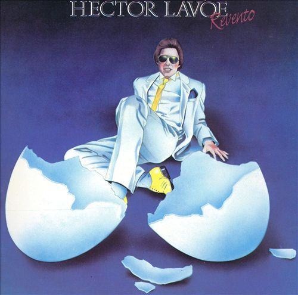
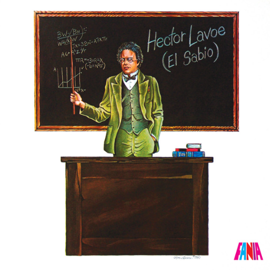

Discografía Recomendada
Reventó (1985)

Titulo
- ¿De que tamaño es tu amor?
- La vida es bonita
- Don Fulano de Tal
- La Fama
- Déjala que siga
- Cáncer
- ¿Por qué no puedo ser feliz?
Compositor(es)
- Reynaldo Armas
- Cacho Castaña
- Blanca García
- Héctor Lavoe
- Edgardo Donato
- Joe Jackson
- E. Sisterna, R. Galan, G. Galan
Duración
- 3:31
- 4:10
- 3:44
- 5:20
- 6:23
- 6:50
- 4:17
Comedia (1978)

Titulo
- El Cantante
- Comedia
- La Verdad
- Tiempos Pesados
- Bandolera
- ¿Por qué Te Conocí?
- Songoro Cosongo
Compositor(es)
- Rubén Blades
- José A. Espinosa
- Freddy Molina / Yin Carrizo
- D.R.
- Victor Cavalli
- D.R.
- Eliseo Grenet / Nicolas Guillen
Duración
- 10:23
- 3:28
- 5:30
- 4:26
- 9:32
- 4:47
- 7:50
El Sabio (1980)

Titulo
- El Sabio
- Plazos Traicioneros
- Noche de Farra
- Para Ochún
- Aléjate
- Lloré
- Ceora
Compositor(es)
- Tito Rodrpiguez
- Luis Marquetti
- Armando Dwolff
- Héctor Lavoe
- Raul Rene Rosado
- Jose Febles
- Lee Morgan
Duración
- 4:29
- 3:33
- 6:00
- 6:35
- 7:07
- 6:21
- 5:44